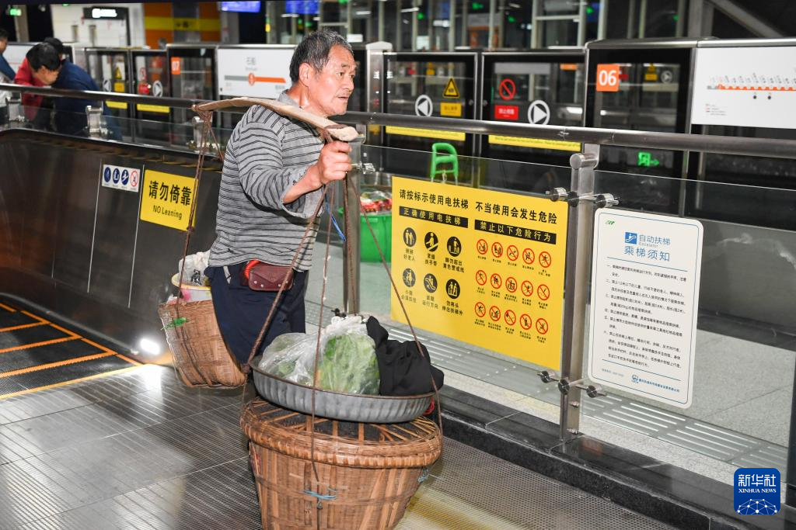
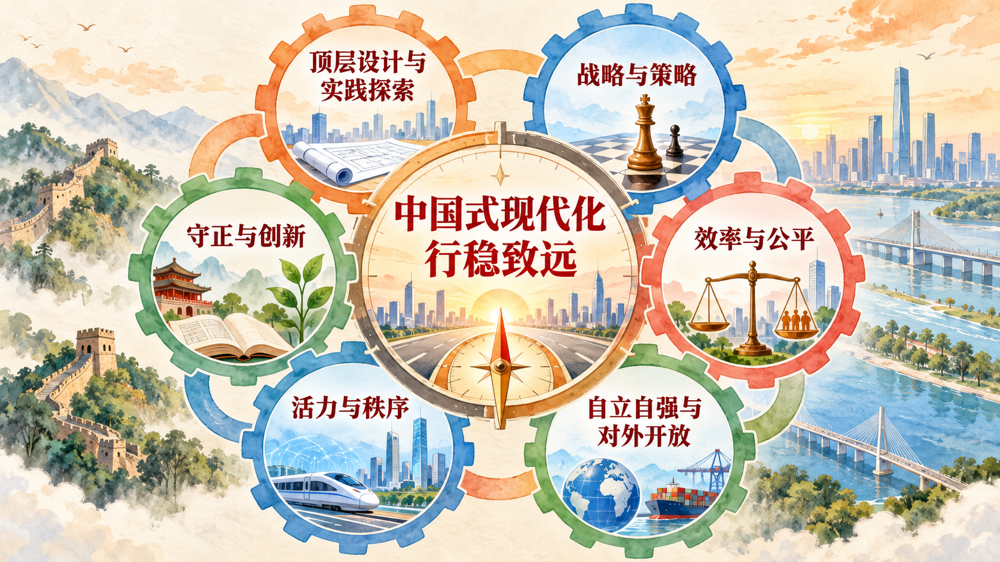

从正确方向到实践能力
明确目标和道路之后，还要回答怎样把宏伟蓝图变成持续的社会实践。中国式现代化是一项前无古人的开创性事业，既需要保持方向和战略定力，也需要根据不断变化的条件解决新问题。本节以重大原则确定行动底线，以重大关系训练系统思维，以团结奋斗说明事业依靠的主体力量。
一、推进中国式现代化需要牢牢把握的重大原则
推进中国式现代化必须坚持和加强党的全面领导。中国式现代化涉及长期目标、不同地区、各个领域和亿万人民，需要形成统一意志、协调行动并保持政策连续性。党的领导使现代化建设能够从全局和长远出发谋划，把各方面力量组织起来，并在风险挑战中保持正确方向。
必须坚持中国特色社会主义道路。道路决定现代化的根本性质。坚持中国特色社会主义，要求把科学社会主义基本原则同中国具体实际、中华优秀传统文化相结合，在实践中不断完善制度、发展生产力、实现人民对美好生活的向往。
必须坚持以人民为中心的发展思想。人民既是现代化建设的主体，也是现代化成果的享有者。制定和评价政策，需要观察人民是否有更充分的发展机会，公共服务是否更加可及，发展成果是否更多更公平惠及全体人民，并通过人民参与汇集智慧和力量。
必须坚持深化改革开放。现代化进程会不断出现利益关系调整、技术变化和治理新问题，改革用于破除制约发展的体制机制障碍，开放使中国能够利用国内国际两个市场、两种资源并参与全球合作。改革开放要服务于完善和发展中国特色社会主义制度、推进国家治理体系和治理能力现代化。
必须坚持发扬斗争精神。推进现代化不可能一帆风顺，需要增强忧患意识、坚持底线思维，准备应对重大风险挑战。斗争精神表现为在原则问题上立场坚定，在复杂条件下认识风险、解决矛盾，并以顽强奋斗打开事业发展新天地。
五项重大原则共同回答谁来领导、走什么道路、为了谁、依靠什么动力以及怎样面对风险。它们贯穿现代化建设全过程，不能因某一阶段发展任务或外部环境变化而被割裂。
二、推进中国式现代化需要正确处理的重大关系
正确处理顶层设计与实践探索的关系，要求把国家层面的方向、目标和制度安排同基层、地方和行业的具体实践结合起来。顶层设计提高整体协调性，实践探索发现真实问题、积累可推广经验；实践中的反馈又推动顶层设计完善。
正确处理战略与策略的关系，要求既保持长期目标和根本方向稳定，又根据形势变化选择具体方法。战略决定全局和长远，策略服务战略并强调时机、步骤和方式。只有战略没有策略，目标难以落地；只有局部策略而缺少战略统摄，行动容易失去方向。
正确处理守正与创新的关系，要求坚持中国式现代化的本和源、根和魂，同时通过理论创新、实践创新、制度创新、文化创新和其他各方面创新解决新问题。守正为创新确定方向，创新使应当坚持的原则在新的条件下获得实现形式。
正确处理效率与公平的关系，要求既通过竞争、创新和资源优化配置提高发展效率，又通过制度安排保障基本权利和发展机会，使人民共享发展成果。公平不是排斥效率，效率也不能以牺牲基本公平为代价。二者要在不同领域、不同发展阶段和具体政策工具中实现动态平衡。
案例研究｜背篓能不能上地铁：一条地铁线里的效率与公平
重庆轨道交通 4 号线二期于 2022 年 6 月开通，全长 32.8 公里，共设 15 个车站，连接渝北区石船镇和中心城区。每天清晨 6 时左右，周边十几个村庄的菜农背着竹篓、挑着扁担来到石船站，篓里装着豌豆尖、脐橙等当季农产品。地铁开通以前，他们主要在镇上卖菜，客流少、销售慢、价格也较低；线路开通以后，菜农可以直接进入城区市场，这条线路逐渐有了“背篓专线”的称呼。

轨道交通改变的不只是出行速度，还改变了小农户能够进入的市场范围。冯爷爷过去到市区卖菜要换乘几趟公交，一个多小时仍未必到达；乘坐地铁后，不到半小时便能到达市场。他和老伴带去的豌豆尖不到 3 小时就能卖完。重庆年满 65 岁的老年人可以免费乘坐轨道交通，这又降低了老年菜农的交通支出。部分城区市场还设置“农民背篼菜区”，使菜农下车以后能够找到相对稳定的销售空间。
2024 年 3 月，有网友提出早晚高峰禁止携带菜筐等大型物品，理由是车厢空间有限，背篓可能影响通勤和环境卫生。轨道交通方面回应，只要乘客行为和携带物品符合规定，就不会干涉；如果蔬菜汁水影响车厢环境，保洁和工作人员会及时处理。这个回应把所有乘客共同遵守的安全、尺寸和卫生规则作为边界，没有简单按乘客身份决定谁能乘车。
为了减少背篓、安检与早高峰客流之间的冲突，车站在完成准备后把原定 6 时 15 分开启的闸门提前 5 分钟打开，工作人员帮助搬运背篓、引导乘坐升降电梯，并使用手持金属探测仪快速安检。服务后来继续向车站以外延伸：2024 年 4 月开通的 9106 路公交连接统景镇与轨道站点，全程约 15 公里、票价 2 元，并实行一小时内免费或优惠换乘；交通部门通过走访和“坝坝会”了解需要，把部分便民通道由 60 厘米拓宽至 150 厘米，补充照明和排水设施。
这个案例中的公平并不是让任何物品不受规则约束，而是让通勤者和菜农都能在共同规则下使用公共交通。效率也不只是让列车更快，而是通过提前开站、分类安检、公交接驳、市场衔接和设施改造降低整个出行与交易过程的时间成本。制度规则维持秩序，精细服务回应不同群体的实际条件，效率与公平由此在具体治理中得到统一。
讨论题
- 如果你在早高峰车厢里遇到占用较多空间的背篓，会怎样设计规则兼顾通勤者和菜农？
- 提前开站、手持安检、公交接驳和市场专区中，哪一项最能提高整体效率？请说明判断依据。
- 公共交通的“公平”是所有人接受完全相同的服务，还是根据不同需要提供适当帮助？这个案例给出了什么启发？
资料来源：《网友建议高峰时段禁止带菜筐上地铁上热搜，重庆“背篓专线”回应》，《重庆日报》，2024 年 3 月 22 日；重庆市人民政府《新开 9106 路公交线 重庆“背篓专线”上新》，2024 年 4 月 22 日；重庆市交通运输委员会《市交通执法总队轨道交通支队为轨道 4 号线“背篓专线”菜农解决出行难题》，2024 年 11 月 20 日。
正确处理活力与秩序的关系，要求一方面充分调动人民群众、市场主体和社会组织的积极性创造性，另一方面以制度和法治明确行为边界、维护公共利益。活力使社会保持创新动力，秩序为稳定预期和长期发展提供条件。好的治理要让创造活力有空间，也让各种活动在规则中运行。
正确处理自立自强与对外开放的关系，要求把国家发展进步的命运牢牢掌握在自己手中，同时主动学习借鉴人类一切优秀文明成果，利用全球创新、市场和资源。自立自强形成开放合作的能力和底气，对外开放扩大资源配置与共同发展的空间。二者统一于推进中国式现代化的实践。

新闻摘录｜工业发展如何同时回应就业、创新与绿色转型
联合国工业发展组织 2024 年发布《工业发展报告》。报告提出，工业化仍然是创造就业、减少贫困和推动技术进步的重要力量。每一个制造业就业岗位，都有潜力在其他部门创造两个以上岗位；工业企业还拥有全球约 60% 的绿色专利，能够把技术创新转化为更清洁的生产设备、材料和工艺。
报告把当代工业发展放在四组结构变化中观察：能源转型正在重塑产业成本和投资方向，第四次工业革命加快数字技术进入生产过程，全球贸易格局重新平衡，人口结构变化影响劳动力与消费需求。不同国家和地区的产业基础、能源条件、人口结构和治理能力不同，因此工业政策需要针对具体条件配置基础设施、技能、技术和融资工具。
这则报道呈现了现代化政策中的多重关系。发展制造业既要提高生产效率，也要创造更广泛的就业机会；推进绿色转型既需要战略目标，也需要企业技术改造和地方项目等实践探索；提升本国产业能力要立足自立自强，同时依靠技术交流、贸易和国际合作连接全球资源。
讨论题
- 为什么制造业岗位能够带动其他部门就业？这种带动需要哪些条件？
- 面对能源转型和人工智能等技术变化，产业政策怎样统筹战略与策略？
- 如果一个地区要建设绿色制造业，应怎样把顶层设计同当地产业基础结合起来？
资料来源：联合国工业发展组织《联合国工发组织发布〈2024 年工业发展报告〉》，2024 年 6 月 18 日。正文依据英文原文翻译并作删节。
三、推进中国式现代化必须坚持团结奋斗
中国式现代化是亿万人民共同参与的事业。现代化建设涉及地区、城乡、行业和群体之间的广泛联系，需要在共同目标下形成最大公约数、汇聚各方面力量。党的领导为团结奋斗提供根本保证，人民主体地位则使现代化拥有最深厚的力量来源。
团结建立在共同理想和共同利益基础上，也需要通过民主、法治和制度机制正确处理人民内部矛盾。不同群体在具体利益、生活经验和表达方式上可能存在差异，团结并不要求取消差异，而是在充分表达、协商协调和依法办事中形成共同意志。只有把尊重差异同维护共同目标结合起来，才能把社会活力转化为建设力量。
奋斗要求把战略目标落实为持续行动。实现现代化强国目标不可能一蹴而就，需要一代又一代人接续推进。习近平指出：“我们靠团结奋斗创造了辉煌历史，还要靠团结奋斗开辟美好未来。”对大学生而言，团结奋斗可以落实为在团队学习、专业实践和公共参与中理解他人、承担责任、解决问题，把个人能力增长同国家现代化需要连接起来。